[판사·김앤장 경력 정지훈], [검사·태평양 경력 유선경] 변호사를 필두로 한 성범죄팀이
고난도, 의뢰인의 일생일대 중요한 사건에서
무죄/무혐의/기소유예를 이끌어냅니다.
[판사·김앤장 경력 정지훈 변호사]
[검사·태평양 경력 유선경 변호사]
를 필두로 한 성범죄팀이 고난도, 의뢰인의 일생일대
중요 사건에서 무죄/무혐의/기소유예를 이끌어냅니다.
결국, 최종 결정은 판사가 합니다.
판사의 시각에서 대응하고 준비해야 합니다.
-
박현식 대표변호사
- · 고려대 법학과
- · 52회 사법고시 합격
- · 前) 서울중앙지검 법무관
- · 대한변호사협회 인증 형사법 전문
-
유선경 대표변호사
- · 고려대 법학과
- · 49회 사법고시 합격
- · 前) 서울중앙지검 성범죄부서 검사
- · 前) 춘천지검 강릉지청 검사
- · 前) 법무법인 태평양 형사팀
-
정지훈 대표변호사
- · 서울대 법학과
- · 47회 사법고시 합격
- · 前) 수원지방법원 판사
- · 前) 김앤장 법률사무소
- · 前) 해군 1함대사령부 군판사
- · 前) 국방부 검찰단 군검찰관
-
조건명 대표변호사
- · 연세대 법학과
- · 53회 사법고시 합격
- · 前) 서울서부지검 검사직무대리
- · 前) 법무법인 태평양 형사팀
-
김동우 대표변호사
- · 연세대 법학과
- · 53회 사법고시 합격
- · 서울수서경찰서 자문위원
- · 과천경찰서 자문위원
- · 대한변호사협회 인증 형사법 전문
성범죄대응 전담 ONE팀
-
유선경 대표변호사
- · 고려대 법학과
- · 49회 사법고시 합격
- · 前) 서울중앙지검 성범죄부서 검사
- · 前) 춘천지검 강릉지청 검사
- · 前) 법무법인 태평양 형사팀
-
정지훈 대표변호사
- · 서울대 법학과
- · 47회 사법고시 합격
- · 前) 수원지방법원 판사
- · 前) 김앤장 법률사무소
- · 前) 해군 1함대사령부 군판사
- · 前) 국방부 검찰단 국검찰관
-
박현식 대표변호사
- · 고려대 법학과
- · 52회 사법고시 합격
- · 前) 서울중앙지검 법무관
- · 대한변호사협회 인증 형사법 전문
-
조건명 대표변호사
- · 연세대 법학과
- · 53회 사법고시 합격
- · 前) 서울서부지검 검사직무 대리
- · 前) 법무법인 태평양 형사팀
-
김동우 대표변호사
- · 연세대 법학과
- · 53회 사법고시 합격
- · 수서경찰서 자문위원
- · 과천경찰서 자문위원
- · 대한변호사협회 인증 형사법 전문
에이앤랩은 성범죄에 집중하는 성범죄 로펌입니다.
에이앤랩이 이끌어낸 성공사례를
판결문과 처분서로 확인하세요.
- 강간
- 강제추행
- 미성년자의제강간
- 아청법위반
- 공중밀집장소추행
- 성매매
- 성착취물
- 딥페이크성범죄
- 공연음란
- 통신매체이용음란
- 기타
- 강간
- 강제추행
- 미성년자의제강간
- 아청법위반
- 카메라등이용촬영
- 공중밀집장소추행
- 성매매
- 성착취물
- 딥페이크성범죄
- 공연음란
- 통신매체이용음란
- 기타
에이앤랩은 지금까지 '다섯가지의 철학'으로 성범죄 변호를 해왔습니다.
그 내용을 자세하게 소개드립니다.
知彼知己 百戰不殆
지피지기 백전불태
상대방을 알고 나를 알면 백번을 싸워도 위태롭지 않다.
-
성범죄 사건은 일반 민사 사건과는 달리 수사 단계에서 수사 내용이 공개되지 않습니다.
따라서, 수사기관의 수사내용 및 법원의 판단과정을 정확히 예측하고, 이를 바탕으로 대응 전략을 세우는 것이 성범죄 변호의 핵심입니다.
정지훈 변호사는 판사를 역임하여, 법원의 성범죄 판결 기준과 판사들의 판단 논리를 정확히 이해하고 있으며, 대형 로펌 김앤장에서 형사 사건을 변호한 경험이 있습니다.
유선경 변호사는 검사를 역임하여, 성범죄 사건의 검찰의 기소 기준과 수사 방식에 대한 깊은 이해를 가지고 있으며, 대형 로펌 태평양에서 형사 사건을 변호하며 기소유예, 감형, 무죄 판결을 이끌어낸 경험이 다수 있습니다.
‘경찰수사 → 검찰수사 → 재판’으로 이어지는 단계에서 직접 경험을 바탕으로, 담당 검사와 담당 판사의 입장에서 어떤 판단을 할지를 예상하고(지피지기 知彼知己), 미리 대비하여 의뢰인을 위태로운 상황에서 벗어나게 합니다(백전불태 百戰不殆)
-
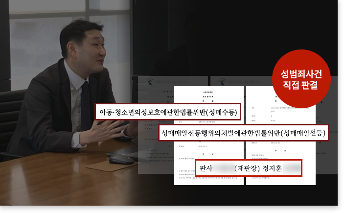
-
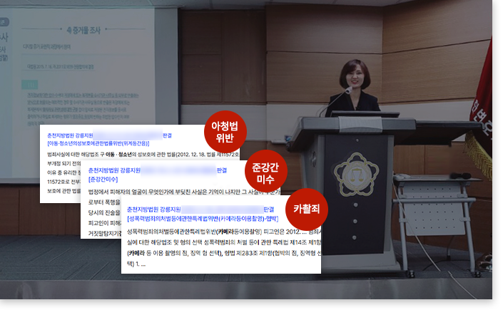
-
유선경 변호사는, 대한변호사협회 특별연수에서 변호사들을 대상으로 ‘형사절차론’을 강의하였습니다.
유선경 변호사는 수사단계에 포함되는 각 절차를 상세히 소개하고, 변호인이 수사기관에 요구할 수 있는 권리에 대해서 설명하였습니다.
또한, 재판단계에서 심급별 전체적인 흐름을 안내하고, 각 절차에 따른 변호사의 역할을 해설하였습니다.
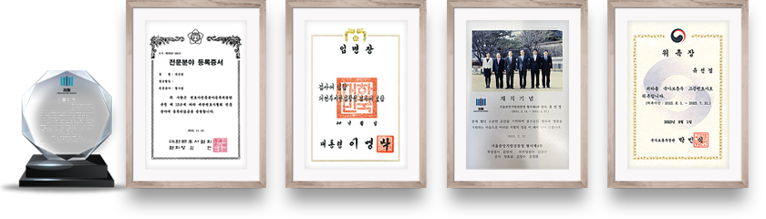
逆境不屈
역경불굴
어려운 상황에도 굴하지 않고 끝까지 버티는 강한 의지
산전수전을 겪은 성범죄 변호사, 결국 성공사례를 만들어냈습니다.
성범죄 사건은 법조 경험과 실전 대응 능력이 '핵심'입니다.
“법무법인 에이앤랩은 10년 이상의 법조 경력을 보유한
성범죄 변호사들이 직접 사건을 해결합니다.”
성범죄 수사 검사를 역임한 유선경 변호사는 검찰의 수사 방식과 기소 기준을 꿰뚫으며, 성범죄 판결 판사를 역임한 정지훈 변호사는 법원의 판단 구조를 정확히 알고 있으며,
대한민국 대형로펌(김앤장·태평양) 경력의 정지훈, 조건명, 유선경 변호사는 대형 형사사건을 다뤄온 실전 경험을 바탕으로 최상의 변론을 제공합니다.
성범죄 수사와 재판, 변호의 모든 과정을 직접 경험한 전문가들이 어려운 상황에서도 굴하지 않고,
끝까지 버티며 철저한 변론을 통해 성공사례를 쌓아왔습니다.(역경불굴 逆境不屈)
適材適所
적재적소
알맞은 인재를 알맞은 자리에 씀
성범죄 사건은 경찰 수사에서 시작해 검찰의 기소 여부를 거쳐
법원의 판결로 이어지는 복잡한 절차를 거칩니다.
이 과정에서 각 단계마다 수사기관과 법원의 시각을 정확히 이해하고,
이에 맞춰 대응 전략을 수립하는 것이 사건의 '승패를 결정 짓는 핵심 요소'입니다.
“따라서, 경찰·검찰·법원의 판단 방식을 깊이 이해하고 있는 전문가가 적재적소(適材適所)에 배치되어야만,
의뢰인을 유리한 방향으로 이끌어갈 수 있습니다.”
에이앤랩 성범죄 그룹은 성범죄 판결을 내린 판사, 성범죄 수사를 직접 담당한 검사,
그리고 대한민국 대형 로펌(김앤장·태평양)에서 수많은 성범죄 사건을 변호한 변호사들로 구성되어 있습니다.
에이앤랩의 변호사들은 실제 검사와 판사로서 법적 판단을 내려본 경험을 바탕으로,
수사기관과 법원의 시각을 정확히 이해하고 대응할 수 있는 능력을 갖추고 있습니다.
성범죄 사건 조력 과정
아래는, 실제 에이앤랩에서 진행한 사건의 과정으로
통상 중형이 선고되는 '미성년자의제강간 혐의' 의뢰인이 이례적으로 기소유예 처분 받은 사례입니다.
-
1
의뢰인 내방회의(1차)
· 사실관계 파악 및 사건방향 확정
· 에이앤랩 양형 매뉴얼에 따른 양형자료 준비 요청
정지훈 변호사, 유선경 변호사,
조건명 변호사 회의 참석
-
2
피의자 조사, 예상 질문 답변 연습
에이앤랩 모의조사 시뮬레이션 시스템
검사 역임 유선경 변호사,
형사법 전문 박현식 변호사 진행
-
3
경찰 피의자 조사 참여
· 에이앤랩 모의조사 시뮬레이션 시스템
-
4
의뢰인 내방회의(2차)
· 피의자 조사 시, 취득한 사건 정보를 바탕으로 변호인 의견서 방향 확정
-
5
피해자 법정대리인과 합의 시도 및 합의 체결
· 피해자 부모님 직접 찾아가서 합의서 및 선처 탄원서 작성
-
6
담당 검사 확인,
의견서 제출 및 구두 변론
-
담당 검사는 에이앤랩의 변론을 받아들여
통상 중형이 선고되는 '미성년자의제강간' 혐의
의뢰인에 대해 이례적으로
⨠ 기소유예 처분
-
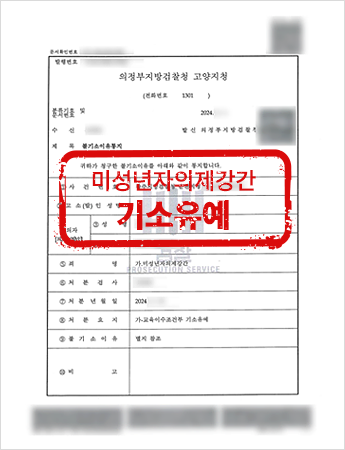
-
담당 검사는
에이앤랩의 변론을 받아들여
통상 중형이 선고되는 '미성년자의제강간'혐의에 대해 이례적으로
기소유예 처분

-
언론도 주목하는 에이앤랩
그 배경은 바로 전문성입니다.
변호사와 상의하세요
切磋琢磨
절차탁마
학문이나 기술을 갈고 닦아 정진함
에이앤랩은 오랜 시간 성범죄 변호에 집중하며, 성범죄에 대한 절차탁마(切磋琢磨)의 자세로 수 많은 사건을 해결하며 경험과 노하우를 축적해왔습니다.
단순히 개별 변호사의 순간적인 판단이 아니라,
체계적으로 사건을 분석하고 대응할 수 있도록 ANL 성범죄 변호 시스템을 구축하였습니다.
“이 시스템은, 경찰 수사 → 검찰 조사 → 법원 재판까지 사건의 진행 과정에 따라
‘철저한 대응 전략’을 마련하는 체계적인 변호 프로세스입니다.”
의뢰인은 사건 단계마다 무엇을 준비해야 하고, 변호사는 어떤 절차를 진행하는지를 명확하게 이해할 수 있으며,
계획적인 변호 활동을 통해 불안을 해소할 수 있게 되었습니다.
*클릭하면 자세한 내용을 확인할 수 있습니다.
-
성범죄 사건은 초기 대응이 가장 중요합니다.
대표 변호사가 직접 상담을 진행하여 사건의 개요를 파악하고, 법적 쟁점을 분석하며, 피의자의 방어 방향을 설정합니다.
이 과정에서 진술 전략을 수립하고,
불리한 진술을 방지하기 위한 조치를 안내합니다.
성범죄 사건은 초기 대응이 가장 중요합니다.
대표 변호사가 직접 상담을 진행하여 사건의 개요를 파악하고, 법적 쟁점을 분석하며, 피의자의 방향 설정과 함께 불리한 진술을 방지하기 위한 조치를 안내합니다.
-
피의자가 혐의를 부인할 것인지 인정할 것인지를 결정하고,
이에 따른 최적의 대응 전략을 수립합니다.
피의자가 혐의를 부인할 것인지 인정할 것인지를 결정하고, 이에 따른 최적의 대응 전략을 수립합니다.
-
부인하는 사건은 피해자의 주장과 모순되는 증거를
확보하여 피의자의 결백을 입증하는 전략을 수립합니다.
인정하는 사건은 양형 감경을 위한 반성문, 탄원서,
사회적 기여 자료 등을 준비하여 재판에서 최대한
유리한 결과를 얻도록 합니다.
부인하는 사건은 피해자의 주장과 모순되는 증거를 확보하여 피의자의 결백을 입증하는 전략을 수립합니다.
인정하는 사건은 양형 감경을 위한 반성문, 탄원서, 사회적 기여 자료 등을 준비하여 재판에서 최대한 유리한 결과를 얻도록 합니다.
-
부인하는 사건은 피해자의 진술에 대한 신빙성을 문제 삼고, 피의자가 혐의를 부인한다는 내용을 담은 의견서를 제출합니다.
인정하는 사건은 피의자의 반성 및 정상참작 사유를 강조하여 기소유예 또는 감형을 요청하는 의견서를 제출합니다.
부인하는 사건은 피해자의 진술에 대한 신빙성을 문제 삼고, 피의자가 혐의를 부인한다는 내용을 담은 의견서를 제출합니다.
인정하는 사건은 피의자의 반성 및 정상참작 사유를 강조하여 기소유예 또는 감형을 요청하는 의견서를 제출합니다.
-
경찰 및 검찰 조사에서 피의자가 불리한 진술을 하지 않도록 예상 질문에 대한 답변을 연습하고, 조사에 변호인이 입회하여 조력합니다.
수사기관이 편향적인 조사 방향을 가지지 않도록
변호인이 적극 개입합니다.
경찰 및 검찰 조사에서 피의자가 불리한 진술을 하지 않도록 예상 질문에 대한 답변을 연습하고, 조사에 변호인이 입회하여 조력합니다.
수사기관이 편향적인 조사 방향을 가지지 않도록 변호인이 적극 개입합니다.
-
재판을 앞두고 증인신문, 피고인신문, 최후변론, 최후진술 등의 연습을 진행하여 법정에서 변론을 효과적으로 수행할 수 있도록 대비합니다.
재판 과정에서는 변호인이 피의자를 변호하여
무죄 주장 또는 감형을 위한 적극적인 변론을 진행합니다
재판을 앞두고 증인신문, 피고인신문, 최후변론, 최후진술 등의 연습을 진행하여 법정에서 변론을 효과적으로 수행할 수 있도록 대비합니다.
재판 과정에서는 변호인이 피의자를 변호하여 무죄 주장 또는 감형을 위한 적극적인 변론을 진행합니다
-
수사, 재판이 진행되는 동안
새로운 증거나 법률적 논거가 필요할 경우
추가 변호인의견서를 제출하여 변론을 보강합니다.
수사, 재판이 진행되는 동안 새로운 증거나 법률적 논거가 필요할 경우 추가 변호인의견서를 제출하여 변론을 보강합니다.
-
피해자와의 합의를 시도하되, 2차 가해를 방지하면서 원만한 해결을 도모하고,
합의가 이루어진 경우 처벌불원서를 받아 검찰 및 법원에 제출하여 기소유예 또는 감형을 받습니다.
피해자와의 합의를 시도하되, 2차 가해를 방지하면서 원만한 해결을 도모하고, 합의가 이루어진 경우 처벌불원서를 받아 검찰 및 법원에 제출하여 기소유예 또는 감형을 받습니다.
“다시, 평범했던 일상으로”
ANL 시스템의 8단계 전략적 대응을 통해
당신이 다시 평온한 일상으로 돌아갈 수 있도록 최선을 다하겠습니다.
ANL 시스템 자세히 보기→
有備無患
유비무환
미리 준비가 되어 있으면 걱정할 것이 없음
에이앤랩 성범죄 그룹은
체계적인 법률 지원과 맞춤형 변호 전략을 통해 성범죄 사건을 철저하게 대응합니다.
“성범죄 사건은 진술 하나만으로 유죄 판결이 날 가능성이 있는 민감한 사안이므로,
사건 초기부터 ‘전문적인 변호가 필수적’입니다.”
이에 따라 에이앤랩은 유비무환의 자세로 철저하게 준비하고 대비합니다.
-
1. 정지훈·유선경·조건명·박현식·김동우 대표 변호사가 직접 상담합니다.
2인 이상의 대표 변호사가 상담하여 객관적인 해답을 제시합니다.
서울대·고려대·연세대 법학과, 사법시험 합격, 판사·검사 역임, 대형 로펌(김앤장·태평양) 경력 대표 변호사가 직접 상담합니다.
일반적인 로펌에서는 상담하는 변호사와 실제 사건을 수행하는 변호사가 다른 경우가 많아, 사건의 핵심을 놓치는 경우가 발생할 수 있습니다.
그러나 에이앤랩은 처음 상담부터 끝까지 대표 변호사가 사건을 직접 책임지고 진행합니다.
다수의 성범죄 사건을 직접 변호하며 수사기관과 법원의 판단을 예측하는 능력을 갖춘 변호사가 사건을 담당합니다.
변호사는 피의자의 입장에서 사건을 분석하고, 수사 검사와 재판부의 판단을 예상하여 승소 전략을 마련합니다.
사건을 정확히 이해하고, 지피지기(知彼知己) 전략을 적용하여 백전백승할 수 있도록 철저한 변호를 제공합니다.
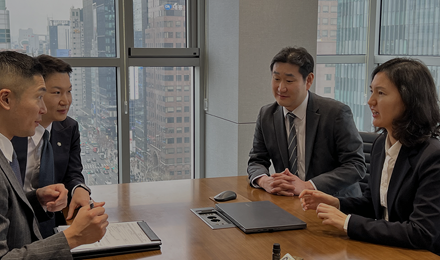
-
2. 직접 소통합니다.
사무장이 없으며, 변호사 개인 휴대전화 번호를 공개합니다.
에이앤랩은 사무장을 두지 않고, 변호사가 직접 의뢰인과 소통하는 방식을 고수합니다.
일반적인 로펌에서는 상담이후 사건 진행 시, 사무장이 연락하고 변호사는 직접 소통하지 않는 경우가 많습니다.
그러나 에이앤랩에서는 상담한 대표 변호사가 사건을 끝까지 책임지며 직접 소통하는 시스템을 운영합니다.
사건 진행 중에도 변호사와 원활하게 소통할 수 있도록 변호사 개인 연락처를 제공하여 긴급 상황에서도 신속한 대응이 가능합니다.
사무실 전화만 공개하고 연락을 피하는 로펌과 달리, 변호사와의 직접 소통을 보장하여 피의자가 불안함 없이 사건을 진행할 수 있도록 합니다.
긴급한 상황에서도 신속한 법률 조력을 제공할 수 있도록 24시간 연락이 가능하도록 운영됩니다.

-
3. 모의조사실을 운영합니다.
경찰·검찰 조사에서 최적의 대응을 위한 사전 훈련을 진행합니다.
성범죄 사건은 진술 하나로 사건의 결과가 결정될 수 있는 특성이 강하므로, 조사 과정에서 어떤 말투와 태도로 진술하는지가 중요합니다.
이에 따라 에이앤랩은 모의조사실을 운영하여 철저한 대비를 지원합니다.
성공사례 데이터를 바탕으로 사건 유형별 예상 질문을 제공합니다.
경찰 및 검찰 조사 출석 전에 예상 질문으로 답변을 연습하여 조사에서 실수 없이 대응할 수 있도록 합니다.
답변 내용뿐만 아니라 말투, 표현, 표정까지도 세심하게 신경 써서 연습합니다.
경찰과 검찰 조사의 특성을 분석하여, 피의자가 혼란스러운 질문에도 침착하게 대응할 수 있도록 훈련합니다.
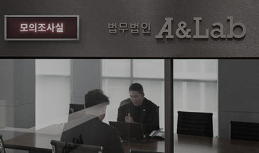
-
4. 6대 센터를 운영합니다.
에이앤랩 성범죄 그룹은 성범죄 사건을 철저하게 분석하고, 맞춤형 변호 전략을 수립하기 위해 6대 센터를 운영하고 있습니다.
· 증거분석센터 : 디지털 포렌식 기술로 삭제된 문자·카카오톡·SNS 대화를 복구하고, CCTV·통화기록·위치 데이터 등 객관적인 증거를 분석합니다.
· 사실관계조사센터 : 피해자와 피의자의 진술을 면밀하게 비교·분석하여 모순점을 찾아내고, 피의자의 입장을 정리하여 신빙성을 높입니다.
· 법리분석센터 : 기존 성공사례 및 판례를 분석하여 사건 별 맞춤형 전략을 수립하고, 기소유예·감형·무죄 판결을 받을 가능성을 극대화합니다.
· 합의전담센터 : 피해자와의 원만한 합의를 유도하고, 처벌불원서 확보 및 감형을 위한 전략을 마련합니다.
· 공무원·전문직·대기업 징계 대응센터 : 성범죄 사건으로 인한 직장 내 징계, 해임, 면직 등의 불이익을 최소화하고, 전략을 수립하여 대응합니다.
· 긴급대응센터 : 갑작스러운 경찰 조사, 압수수색, 체포 등 긴급 상황 발생 시 신속하게 대응하여 피의자의 권리를 보호합니다.

법조경력 10년 이상!
처음부터 확실하게 에이앤랩, 해결방법은 에이앤랩에 있습니다.
에이앤랩은 다릅니다.
하루 빨리 소중한 일상을 되찾을 수 있도록 에이앤랩이 조력하겠습니다.
아래 후기의 다른 분들처럼
하루 빠릴 소중한 일상을 되찾을 수 있도록
에이앤랩이 조력하겠습니다.
-
에이앤랩은
모의조사실을 운영합니다.
과연, 실제 경찰·검찰 조사의 중압감을
아무 준비 없이 이겨낼 수 있을까요?
경찰서 자문위원과 검사 역임 변호사가 투입되어 모의조사실에서 시뮬레이션을 진행하며, 실제 조사에 형사법전문 변호사가 동행합니다.
-
에이앤랩은
대표변호사 책임수행합니다.
경력 믿고 맡겼는데, 불안하신가요?
에이앤랩은 광고속 대표변호사가
초기상담부터 사건 종결까지
모든 과정을 직접 수행합니다.
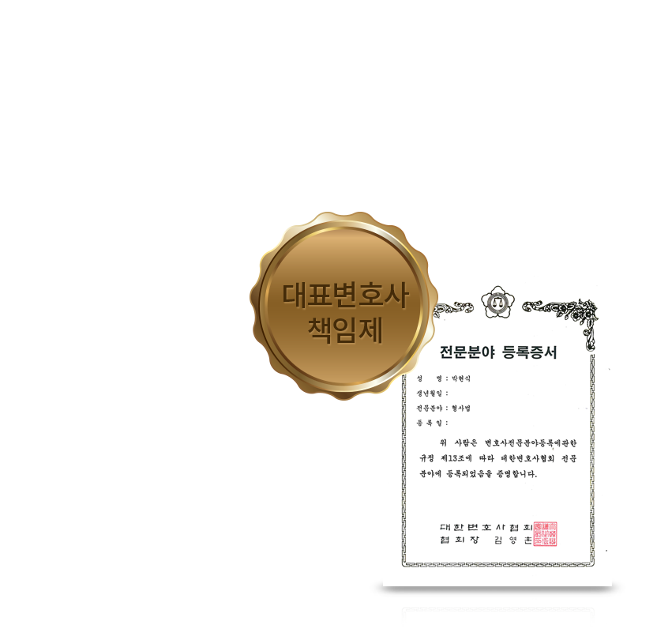
-
-
에이앤랩은
의뢰인에게만 집중합니다.
사건 별 전담팀 구성, 사실관계조사(증거수집), 빅데이터 분석, 합의전략과 비밀보장 매뉴얼까지
불안하고 민감한 사건 의뢰,
에이앤랩에서는 안심하셔도 됩니다.

-
에이앤랩은
24시간 상담이 가능합니다.
서울 강남, 인천, 평택, 수원, 대구 등
전국 어디에서도 상담 가능합니다.
365일, 24시간
주말, 공휴일, 야간에도 편하게 문의 가능합니다.

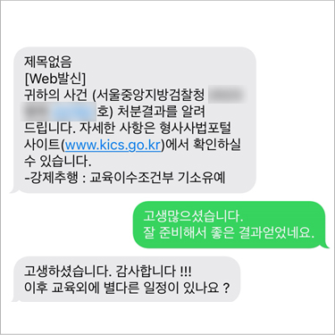
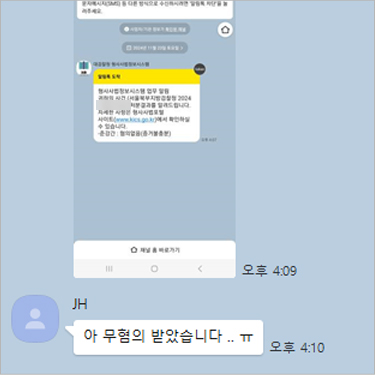
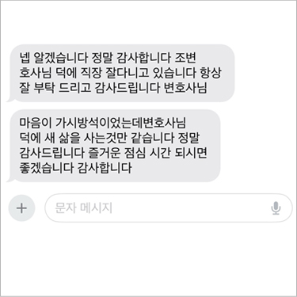
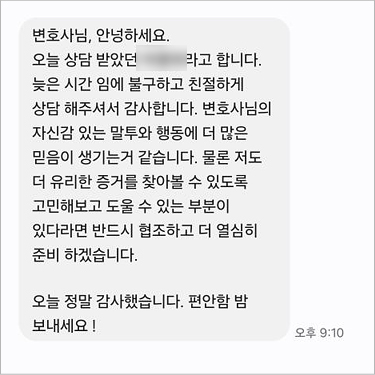
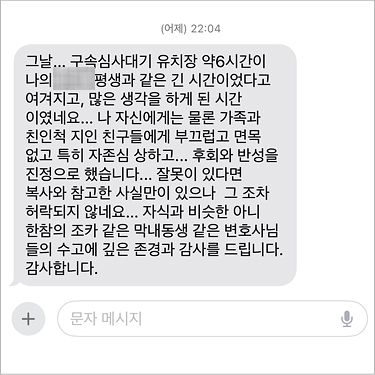
에이앤랩은
24시간 상담이 가능합니다.
서울 강남, 인천, 평택, 수원, 대구 등
전국 어디에서도 상담 가능합니다.
365일 24시간
주말, 공휴일, 야간에도 편하게 문의 가능합니다.
▶ 피의자의 반성과 재범 방지 노력을 적극 변론
· 자필 반성문 제출 : 피의자가 자신의 행동을 깊이 뉘우치고 있음을 강조 · 정신과 치료 및 상담 기록 제출 : 충동적인 성적 행동을 예방하기 위한 병원 치료 증빙 · 성범죄 예방교육 이수 : 재범 방지 노력을 검찰에 적극 어필 · 사회봉사 및 선행 활동 증빙 : 피의자의 선한 성향과 사회적 책임감 강조▶ 피해자와의 합의를 적극 조율하여 최대한의 선처 유도
· 피해자 측과의 원만한 합의를 위한 협상 진행 · 피해자의 피해 회복을 위한 현실적인 보상 방안 제시 · 국선변호사 및 피해자 가족과의 원활한 소통 지원▶ 단순히 법 조항만 적용하는 것이 아니라, 사건의 배경과 피의자의 입장을 세밀하게 분석하여 법적 논리를 구성
· 피해자의 자발적 행위 여부 및 사건의 본질 분석 : 피해자가 먼저 성관계를 제안하였고, 피의자가 적극적으로 강요하지 않았다는 점 · 사건 발생 전후 피의자의 행동 및 심리 상태 분석▶ 피의자의 사회적 환경과 인생 경로를 면밀히 검토하여 초범임을 강조하고, 피의자가 성실하게 살아온 점을 변론
· 범죄 전력이 없는 초범임을 강조 · 경제적으로 어려운 환경에서 성실하게 살아왔음을 입증 · 학교, 군대, 직장에서 받은 상장 및 표창장 제출 · 가족과 주변인의 탄원서 제출로 선처 요청